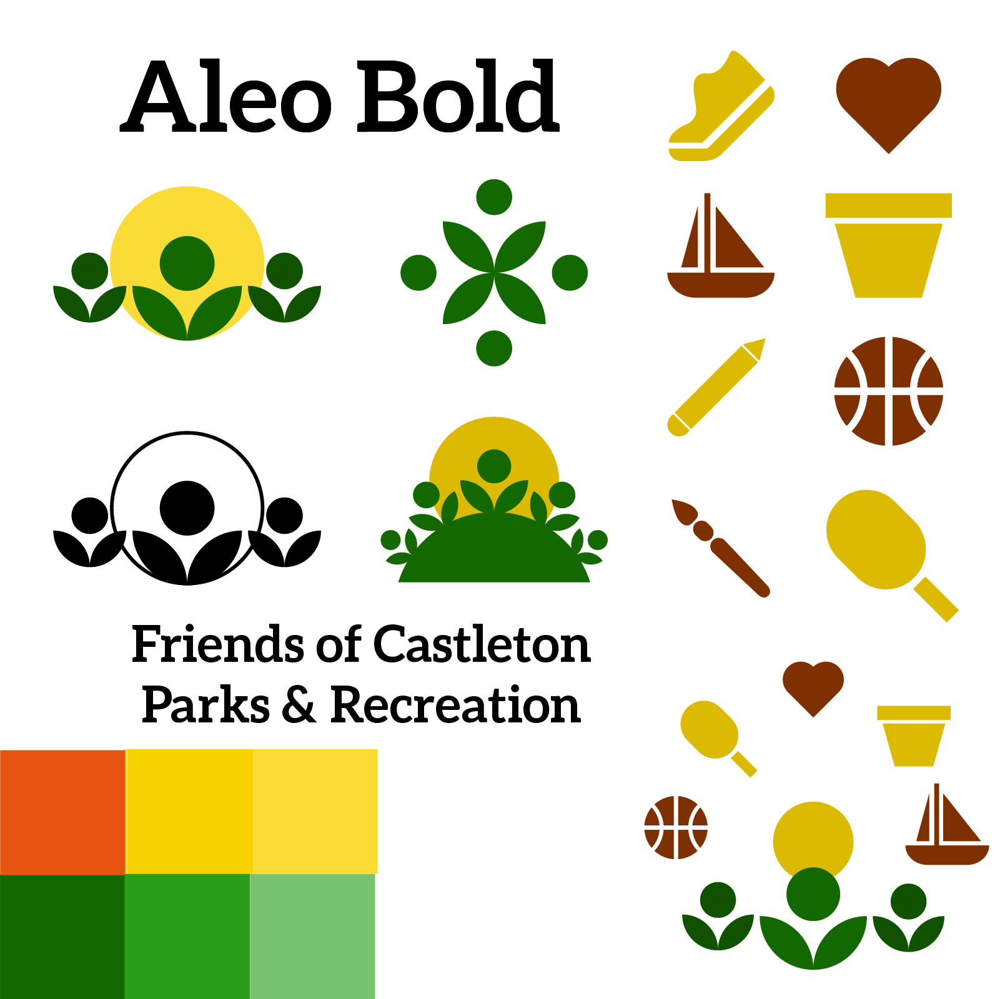
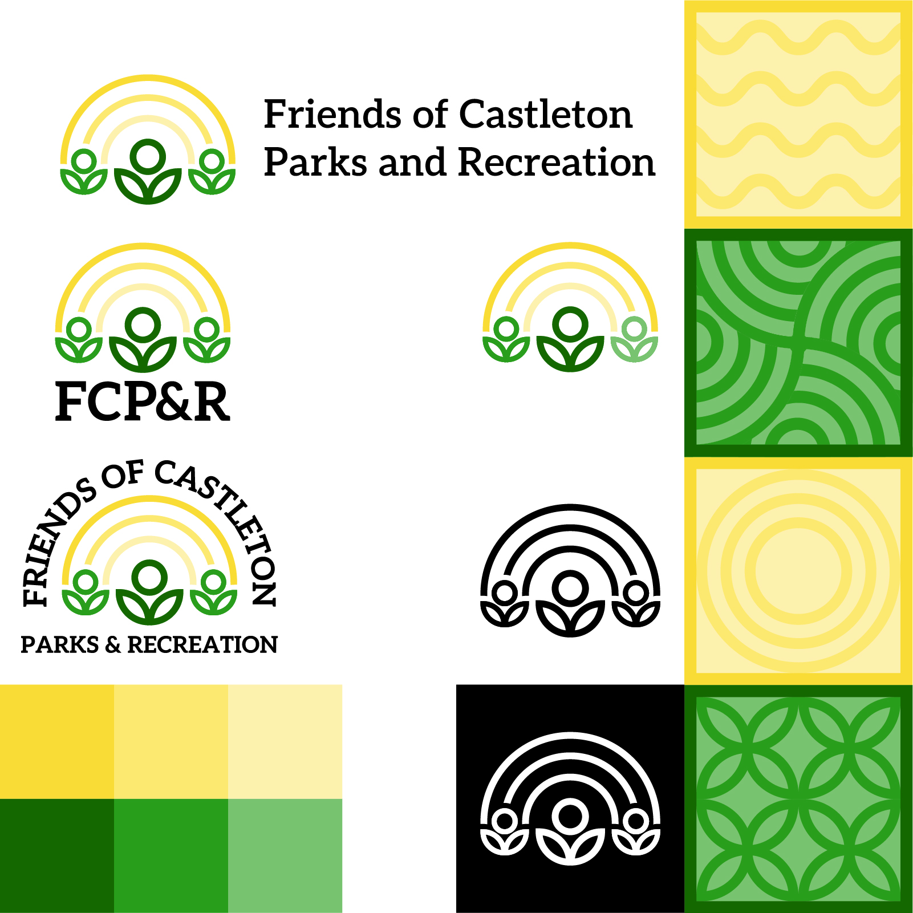

This project began when Mary Droege approached Content Lab with a request for a logo for the newly established Friends of Castleton Parks and Recreation. The organization needed a visual identity that felt welcoming, inclusive, and true to their mission of building community through the activities and events they hosted, both outdoors and indoors. From the start, it was clear this wasn't just about aesthetics: it was about representation, values, and clarity.
From our initial meeting with Mary, there was an interest in being more literal and representational with the imagery: humanoid figures, specific symbols relating to various activities, and diverse visual elements to communicate inclusion. But through rounds of iteration, presentation, and feedback, we began to see how these well-intentioned visuals often became cluttered or unintentionally exclusive. The more specific we got, the more we risked leaving people out.
 |
 |
Eventually, we landed on a solution dubbed the “leaf people” - simple, abstract figures that suggest humanity without prescribing it. Their forms are ambiguous and minimal, allowing viewers to project their own interpretations.
To ground the figures, we explored the idea of curving them around a hill, but in execution, this approach had issues.
While the "leaf people" concept resonated with the client, there were times when they appeared more like plants, especially when grounded against a hill. From there, we returned to a simpler idea: letting the figures float freely - though we still needed a way to connect them.

Another challenge was ensuring the logo could work in monochrome situations. Through experimentation, we found that outlines worked best. They also inspired the final touch, adding sunbeams above the figures, arching like a rainbow and tying them together.

If you'd like to learn more about the branding thought process, you can view the Branding Guide
here.
The first set of presentation slides can be found
here,
and the second set is available
here.